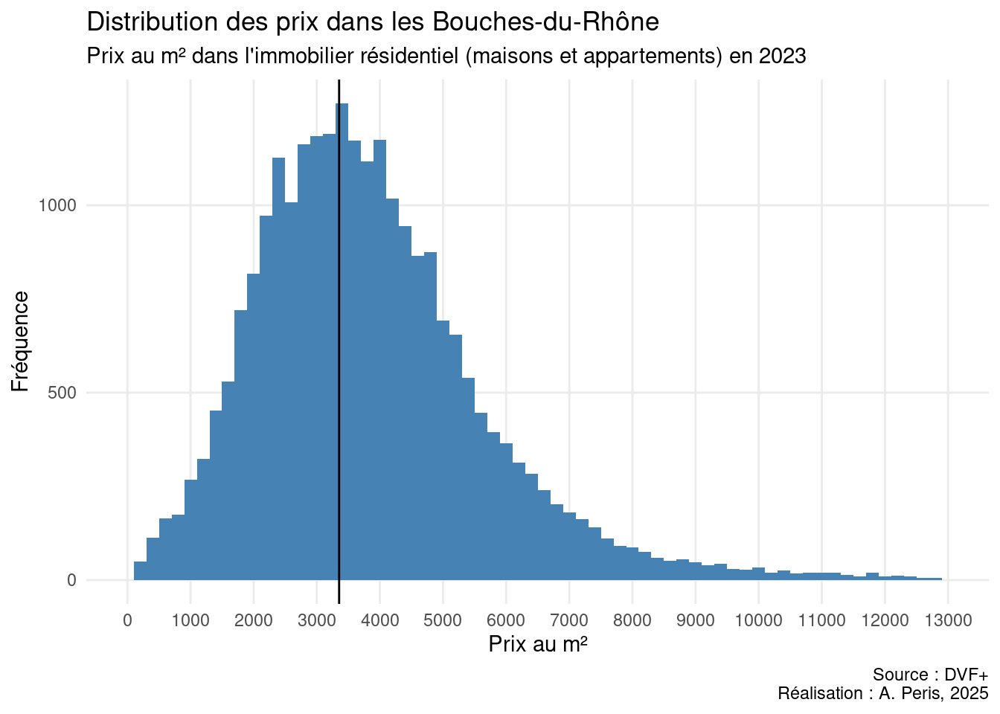
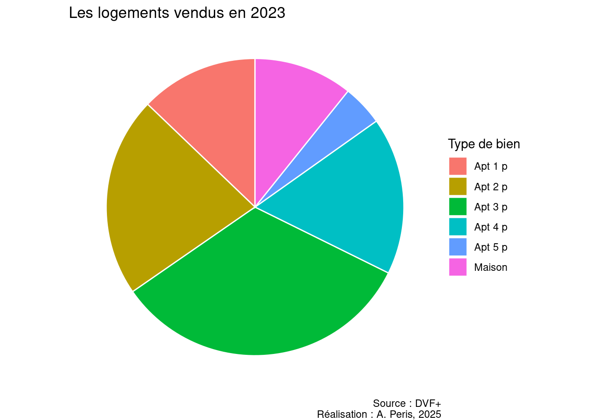

library(sf)
library(dplyr)
library(ggplot2)Visualiser des données avec ggplot2
Chargement des Packages
Chargement des données à visualiser
dvf <- st_read("../data/dvf13.gpkg")La syntaxe de ggplot2
Pour commencer, nous allons créer un simple diagramme en barres du nombre de transactions annuelles. Pour cela, on commence par créer un data frame avec les données qui nous intéressent.
mutan <- dvf %>%
as_tibble() %>%
group_by(anneemut) %>%
summarise(volume=n())Un graphique ggplot2 est composé au minimum de deux fonctions. D’abbord, ggplot() va initialiser un graphique vide. Ensuite, on ajoutera une (ou plusieurs) fonctions graphiques afin de faire figurer des objets géométriques. Par exemple, pour un diagramme en barre, on utilisera geom_col(). Il est nécessaire de spécifier au minimum deux choses au sein du graphique : data = mutan, qui indique la source des données et aes(x=anneemut, y=volume), qui définit quelles colonnes du data frame sont représentées aux axes.
ggplot()+
geom_col(data = mutan, aes(x=anneemut, y=volume))Les graphiques peuvent ensuite être retravaillés pour améliorer l’esthétique ou intégrer une identité visuelle. Par exemple, le code suivant permet de changer la couleur des barres, de renommer les axes, d’ajouter un titre, de changer la couleur du fond et d’ajouter l’auteur et la source des données.
ggplot() +
geom_col(data = mutan, aes(x=anneemut, y=volume), fill = "steelblue") +
labs(title = "Volume de transactions dans les Bouches-du-Rhône",
subtitle = "Transactions dans l'immobilier résidentiel (maisons et appartements)",
x = "Année",
y = "Volume",
caption = "Source : DVF+\nRéalisation : A. Peris, 2025") +
theme_minimal()
Comme l’année 2024 n’est pas complète. Pour la suite du tuto, on l’exclue du data frame.
dvf <- dvf %>%
filter(anneemut != 2024)Différents types de graphiques
Histogrammes
Pour visualiser une distribution, on peut avoir recours à un histogramme. Celui-ci représente la fréquence d’événements par classe d’une valeur donnée. Ci-dessous, le graphique représente la distribution des prix au m² dans les Bouches-du-Rhône. Avec la fonction scale_x_continuous(), on limite les valeurs de l’axe à 13 000 €/m² pour ne pas que des valeurs extrêmes écrasent la distribution et donne une intervalle de 1000 aux valeurs de l’axe x. La fonction géométrique geom_vline() permet d’ajouter une ligne verticale représentant la moyenne de la distribution.
dvf23 <- dvf %>% filter(anneemut==2023)
ggplot()+
geom_histogram(data=dvf23, aes(x=pxm2), binwidth = 200, fill="steelblue")+
scale_x_continuous(limits = c(0,13000), breaks = seq(0,15000,1000))+
geom_vline(xintercept = mean(dvf$pxm2))+
theme_minimal()+
theme(panel.grid.minor = element_blank())+
labs(title = "Distribution des prix dans les Bouches-du-Rhône",
subtitle = "Prix au m² dans l'immobilier résidentiel (maisons et appartements) en 2023",
x = "Prix au m²",
y = "Fréquence",
caption = "Source : DVF+\nRéalisation : A. Peris, 2025")
Boîtes à moustache
Les boîtes à moustache (boxplots) servent à visualiser la distribution d’une variable numérique : médiane, quartiles, éventuelles valeurs extrêmes (outliers). Elles sont idéales pour comparer plusieurs groupes. On les crée avec geom_boxplot().
dvfMars <- dvf23 %>%
filter(substr(code_insee, 1, 3)=="132",
maison==0)
ggplot()+
geom_boxplot(data=dvfMars, aes(x=code_insee, y=pxm2))+
scale_y_continuous(limit=c(0,10000))+
theme_minimal()+
labs(title = "Prix au m² des appartements à Marseille",
subtitle = "Distribution des prix par arrondissements en 2023",
x = "Arrondissements",
y = "Prix (m²)",
caption = "Source : DVF+\nRéalisation : A. Peris, 2025")+
theme(panel.grid.major.x = element_blank())Courbes
Lorsque l’on veut représenter une évolution temporelle, on mobilise souvent des courbes. En R, on peut les créer avec geom_line() qui trace une courbe reliant les points d’une variable numérique en fonction d’une autre. La variable temporelle apparait en x et la valeur numérique en y. On peut également ajouter des points avec geom_point().
evolTypoMars <- dvf %>%
filter(substr(code_insee, 1, 3)=="132") %>%
as_tibble() %>%
mutate(type=ifelse(maison==0, paste("Apt", nbpiece, "p"), "Maison")) %>%
group_by(type, anneemut) %>%
summarise(pxm2med=median(pxm2), nb=n())
ggplot(evolTypoMars, aes(x=anneemut, y=pxm2med, color=type))+
geom_point(aes(shape = type))+
geom_line()+
theme_minimal() +
labs(title = "Evolution des prix du logement à Marseille",
subtitle = "Prix par m² par type de logement entre 2014 et 2023",
x = "Années",
y = "Prix (m²)",
caption = "Source : DVF+\nRéalisation : A. Peris, 2025")Camembert
Lorsque l’on veut représenter une répartition proportionnelle, on utilise souvent des camemberts. En R, on peut les créer avec geom_bar() combiné à coord_polar(), qui transforme des barres en graphique circulaire. La variable catégorielle est en fill, et les proportions sont définies avec y.
dvf23Mars <- evolTypoMars %>%
filter(anneemut==2023) %>%
mutate(proportion = nb / sum(.$nb)*100)
# Création du camembert
ggplot(dvf23Mars, aes(x = "", y = proportion, fill = type)) +
geom_bar(stat = "identity", width = 1, color = "white") +
coord_polar(theta = "y") +
labs(title = "Les logements vendus en 2023",
fill = "Type de bien",
caption = "Source : DVF+\nRéalisation : A. Peris, 2025") +
theme_void()
Combiner plusieurs graphiques
Grâce au package cowplot, on peut facilement combiner deux graphiques. Le code suivant stocke les deux graphiques précédents dans deux objets (g1 et g2) et les visualise côte à côte avec la fonction plot_grid().
g1 <- ggplot(evolTypoMars, aes(x=anneemut, y=pxm2med, color=type))+
geom_point(aes(shape = type))+
geom_line()+
theme_minimal() +
labs(title = "Evolution des prix du logement à Marseille",
subtitle = "Prix par m² par type de logement entre 2014 et 2023",
x = "Années",
y = "Prix (m²)",
caption = "Source : DVF+\nRéalisation : A. Peris, 2025")
g2 <- ggplot(dvf23Mars, aes(x = "", y = proportion, fill = type)) +
geom_bar(stat = "identity", width = 1, color = "white") +
coord_polar(theta = "y") +
labs(title = "Les logements vendus en 2023",
fill = "Type de bien",
caption = "Source : DVF+\nRéalisation : A. Peris, 2025") +
theme_void()
library(cowplot)
plot_grid(g1, g2, rel_widths = c(3,2))